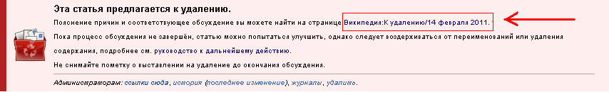
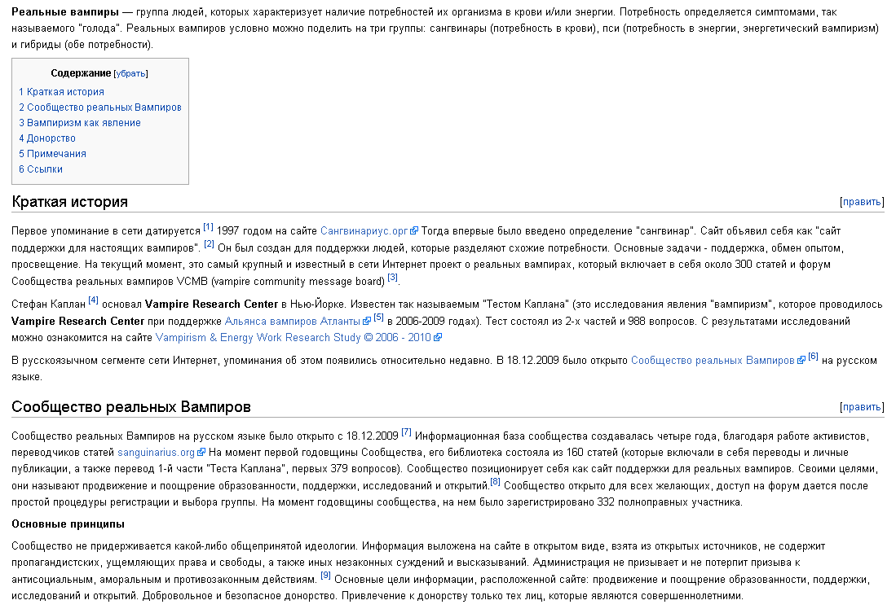
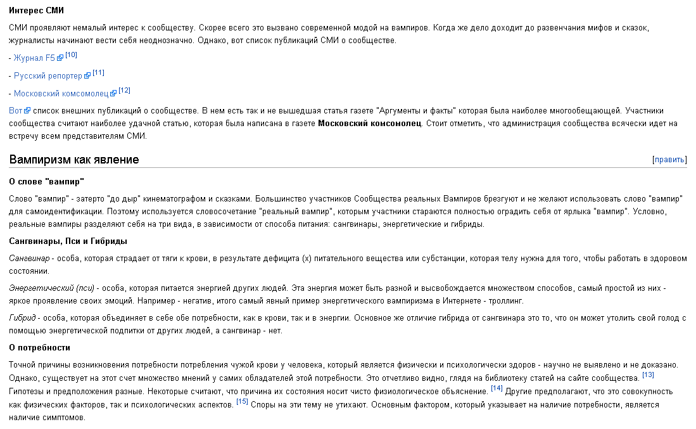
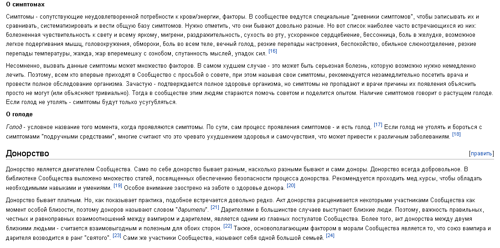
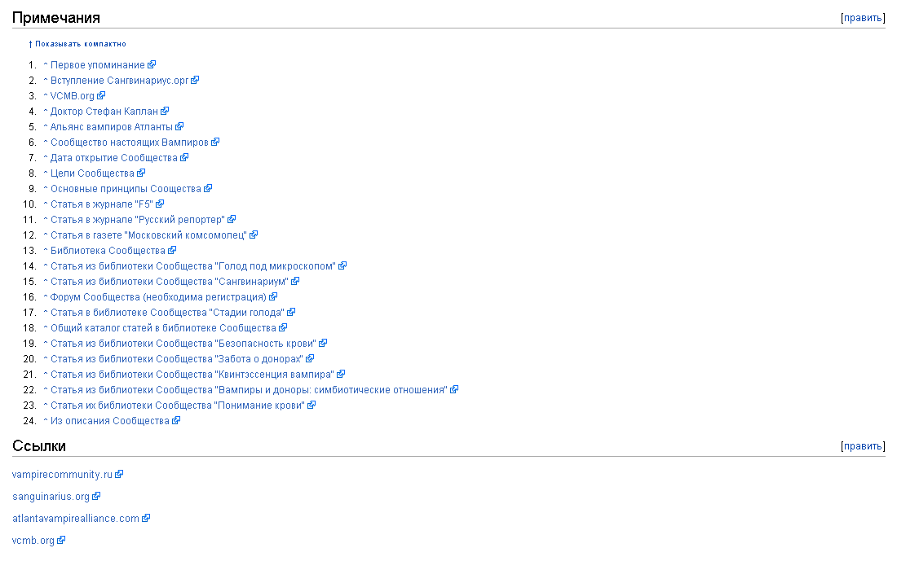

VC в Википедии
Ссылка на статью - http://ru.wikipedia.org/wiki/Реальные_вампиры (статью пропустили в Википедию под грифом "приготовлено к удалению" и её скоро удалят. Любая помощь приветствуется. Вы можете отредактировать саму статью в Вики, добавить что-то свое. Но, особенно ценными являются ваши слова на странице обсуждения статьи, на картинке ниже все показано).

В обсуждении достаточно сказать, что мол "статья полезна, оставьте и тд". Особенно вы поможете, если вы участник Википедии и принимали до этого дня какое-либо участие в жизни Вики-сообщества.
Оригинал статьи я выкладываю на наш сайт. В любом случае, удалят её с Википедии или нет, она останется здесь. Я считаю, что она будет крайне полезна в нашей библиотеке, особенно для новичков.




Ссылки:
- Журнал F5
- Русский репортер
- Московский комсомолец
- Альянс вампиров Атланты
- Vampirism & Energy Work Research Study © 2006 - 2010
- Сангвинариус.орг


Автор: Регент.
(собственность vampirecommunity.ru)
[Наверх]